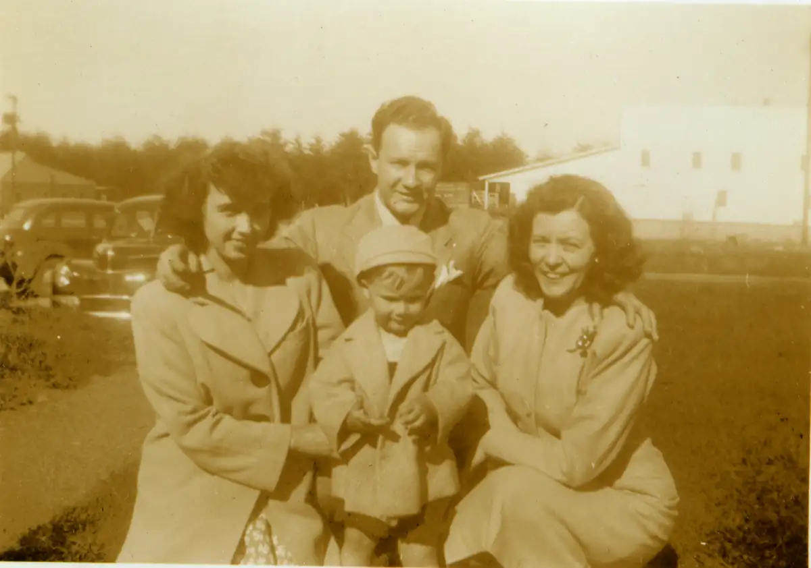

Home / Browns / 009 Jenkins W.I. and Martha / brn009-00006
brn009-00006
← Return to 009 Jenkins W.I. and Martha
← brn009-00005 brn009-00007 →
1946 Martha, WI Jr., Katharyn, WI III. Left to Right: Katharyn Jenkins, W.I. Jenkins, Jr. (behind), W.I. Jenkins, III (front), Martha Jenkins. March 31, 1946.

Actual size: 3.01" × 2.11" · Scanned at: 600 dpi · 2.29 MP (1808×1268) · Image date: 5 Jun 2005 · Comment date: 5 Jun 2005
Copyright © 2005–2026 Thomas Krehbiel. Images are freely distributable for personal use. For more information about these images contact Thomas Krehbiel (tkrehbiel@gmail.com).
Photos were scanned at either 300dpi or 600dpi, depending on the quality of the photograph. Slides were scanned at 1800dpi. Documents were scanned at 100dpi or 150dpi. Photoshop enhancements: most images have had their contrast improved. Some color photos were corrected to restore color balance. Some blurry images were mildly sharpened. Occasionally dust, scratches, and blemishes were removed digitally.
{kind=link}